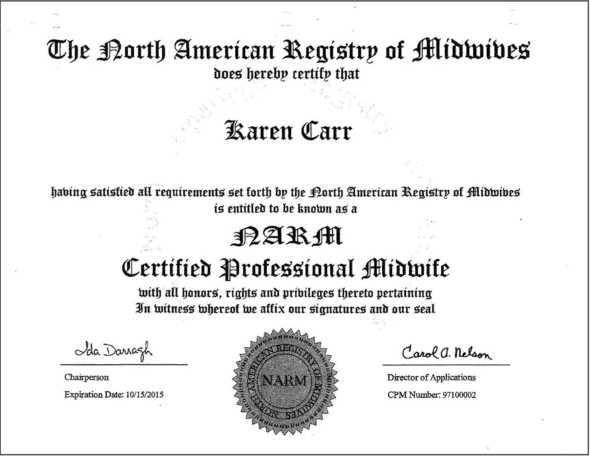

Tori DiVincenzo lay in bed at home, dazed and bleeding. She had pushed for hours under the watch of a veteran midwife, only to deliver her daughter silent and still.
On this November afternoon in 2021, Sophie Rose DiVincenzo was being rushed to the hospital in an ambulance. First responders milled about the house in Calvert County, Md. DiVincenzo’s midwife, Karen Carr, and her assistant drained the birthing pool, stripped the stained bedsheets and ran a load of laundry.
Paramedics and deputies of the Calvert County Sheriff’s Office in Maryland at the DiVincenzo home in response to a 911 call on Nov. 20, 2021. (Footage recorded by Calvert County Sheriff's Office/Provided to The Washington Post by Tori DiVincenzo)
The first-time mother was nude and too weak to stand. Paramedics tried to cover her with a blanket, but she pushed it off; the weight felt unbearable. Carr, then 65 and with short brown hair, sat on the bed and told DiVincenzo that Sophie was dead.
“I just don’t even know how this happened,” Carr said a few times, according to DiVincenzo’s account. About 16 minutes before the birth, the midwife had reported listening to the baby’s heartbeat.
The DiVincenzos have memorialized baby Sophie Rose in pictures in their home. (Sarah L. Voisin/The Washington Post)
Later, investigators would probe whether Carr had failed to properly monitor DiVincenzo and her baby. And DiVincenzo would learn that it was not the first time that Carr had come under scrutiny for her work as a midwife.
Officials in three states and the District of Columbia, including the U.S. attorney’s office for the District, had investigated Carr after home births she attended went wrong. In Virginia, Carr pleaded guilty to two felonies after a baby died in 2010. She served five days in jail and agreed never again to practice in the state. In Maryland, after another infant death that same year, a judge determined that Carr’s decisions during the delivery had “dire consequences.” Officials imposed a hefty fine.
In body-camera footage, a Calvert County sheriff’s deputy questions midwife Karen Carr on Nov. 20, 2021. (Footage recorded by Calvert County Sheriff's Office/Provided to The Washington Post by Tori DiVincenzo) (Sarah L. Voisin/The Washington Post)
However, four other investigations were resolved in her favor, either with no criminal charges or, in two administrative cases, with legal victories. Through it all, The Washington Post found, Carr continued to deliver babies.
The long-running career of Karen Carr highlights a troubling reality: A patchwork of inconsistent laws and limited accountability make it difficult for expectant parents considering a home birth to evaluate a midwife’s record and make an informed decision about one of the most critical events of their lives. Although the full scope of Carr’s history remains out of public view, The Post unearthed new details through public records that show that, over two decades, efforts by officials in multiple states to prevent her from practicing have largely failed.
Carr declined several requests for comment for this story. Through her attorney, she also declined to respond to a detailed list of written questions. To her supporters, Carr’s legal troubles illustrate how officials often misunderstand and even unfairly target midwives who attend home births. “When you fight back, they don’t like it,” said Karen Webster, a Maryland midwife and close friend of Carr’s. “ … I mean, they’re going to always be on the lookout for Karen.”
Home births represent just 1.4 percent of the more than 3.6 million babies born in the United States, according to 2021 data from the Centers for Disease Control and Prevention. But they have increased by 35 percent over five years, while hospital births slightly declined over that 2017-2021 period. White mothers account for 85 percent of planned home births, according to demographic data, but Black and Hispanic people also are increasingly choosing to deliver at home amid a maternal mortality crisis that has disproportionately affected them.
Many women say they choose home births to feel empowered and have more control over their own bodies; others because they want to avoid such medical interventions as Caesarean sections and inductions. The pandemic also fueled a deeper distrust of doctors and hospitals.
Most home births in the country are attended by certified professional midwives such as Carr, who provide care through pregnancy, labor and delivery, and the postpartum period. They generally have no hospital privileges and learn mainly through apprenticeships. Many believe that giving birth is a natural part of life that needs little, if any, medical intervention. They are distinct from certified nurse midwives, who are registered nurses with graduate degrees, and certified midwives, who have graduate degrees but no nursing license; midwives in both of these categories also provide primary care.
Overall, full-term infants in the United States are more than twice as likely to die after planned home births attended by midwives as those delivered in hospitals by any providers, according to a Post analysis of CDC data over five years.
“That data does suggest at this point that the risks are higher for the baby outside of the hospital,” said Melissa Cheyney, a former certified professional midwife and Oregon State University professor who studies midwifery data. That is in part, she said, because “you have systems that are not well regulated.” She added that available data is limited by what is captured through birth certificates and that more research is needed, particularly amid the recent increase in home births.
Midwives who attend home births say women need to decide for themselves. “You cannot have a risk-free situation,” said Lisa Thomas Welch, a certified professional midwife in Texas who teaches courses for other midwives. “You have to decide where the greatest risk is to you, and where the greatest risk is to your baby.”

The DiVincenzos, shown at home in Port Republic, Md., in July, were high school sweethearts and had tried for eight years to have a baby. (Sarah L. Voisin/The Washington Post)
Thirty-six states and D.C. have laws allowing certified professional midwives to seek licensure, but the rules governing their practice vary widely. Some states ban midwives from attending riskier breech or twin births, but others, including Texas, have no such restrictions. Midwives in Delaware and Louisiana, for example, must check the fetal heart rate at certain times during labor, while in other states, including Maryland, there is no such requirement. State laws even differ on what medications midwives can administer.
When something goes wrong, parents typically have limited recourse. State laws are often vague about a certified professional midwife’s obligations during a birth, making it difficult for prosecutors to try administrative or criminal cases. The credentialing body for these midwives, the North American Registry of Midwives (NARM), says it investigates a midwife only with the mother’s full consent. Lawsuits are seldom pursued, because such midwives often are not required to carry malpractice insurance.
It is difficult to know whether Carr’s career represents a broader problem of accountability among certified professional midwives. NARM says it has revoked the credentials of 10 of the more than 4,300 midwives it has certified over 30 years; Carr is not among them. Some states make complaints about midwives easily accessible to the public, but others require records requests. Sometimes, because laws have changed over decades, past allegations are not made available by the agencies that now license midwives. Clients seeking to research Carr, for instance, would find no reason for concern within a state-run database that lets the public check licensed midwives. Her entry shows nothing of her disciplinary or criminal history.
“I trusted her. I trusted her license.
Toni DiVincenzo
“The system isn’t broken because of Karen Carr. That’s a symptom,” said Erin Ryan, a certified professional midwife in Vermont who works as a consultant. “It’s a much bigger systemic issue. If midwives were integrated into the health-care system, there would be standards of practice that were agreed upon.”
DiVincenzo and her husband, Anthony, were high school sweethearts who had tried for eight years to have a baby. Once pregnant, DiVincenzo, then 29, was inspired by home birth communities on social media. She envisioned delivering her daughter at home, with her husband and her mother nearby. A local nurse midwife recommended Karen Carr. DiVincenzo Googled her name and stopped scrolling once she found Carr’s website.
When Tori DiVincenzo got pregnant after eight years of trying, she began looking for a midwife. (Whitney Shefte/The Washington Post)
Carr was licensed as a certified professional midwife in Maryland, and her site said she had attended more than 1,700 births. The DiVincenzos paid $4,200 for her services, though insurance covered most of the fee.
“I trusted her,” Tori DiVincenzo said. “I trusted her license.”
Later, as DiVincenzo dug deeper into Carr’s past and pieced together what happened that day, she became convinced that her daughter’s death could have been avoided. She assembled her evidence in a timeline she titled “Sophie’s Story,” adding a photo of her 9-pound 3-ounce daughter wrapped in a pastel blanket that a volunteer had knitted for bereaved parents. DiVincenzo forwarded the document to the Maryland Board of Nursing, which she hoped would investigate her complaint.
Her goal, she says, was to ensure that Carr never practiced again.
THE CALLING
Before Carr made birthing her business, the petite young mother challenged gender norms by working as a sheet metal mechanic at construction sites around D.C. and Baltimore.
Carr’s own birthing experiences — one traumatic and the next empowering — drove her interest in midwifery. While she was in labor with her first child in 1981, her nurse midwife realized that the baby was in breech position — positioned bottom or feet first in the uterus — which is associated with a higher risk to the child. A doctor then delivered the baby by C-section, leaving Carr feeling that she had had no say in the matter, she later told the Washington City Paper.
When Carr became pregnant again, she gave birth in the bathroom of her Baltimore rowhouse. “It was kind of like part of my day,” she would later say. “I carried on … much the same way as I would have if I was not having a baby that day, until it got challenging.”
After that, Carr began studying to help others have babies on their own terms. In the 1980s, there was no national organization to set standards for midwives, and most states had no licensing requirements. Midwives learned from one another and practiced out of a sense of duty to expectant mothers, but often they were at the mercy of law enforcement agencies and state regulators.
In October 1994, Carr was assisting midwife Judie Pradier at a home birth in Howard County, Md., when the baby’s shoulder became stuck in the birth canal. Pradier dislodged the shoulder, breaking the baby’s arm in the process. The baby survived, but neither Pradier nor Carr took the baby to be examined by a doctor. The family sought a cast for the infant days later, drawing the attention of child abuse investigators. Pradier, now a real estate agent in Arizona, did not respond to requests for comment.
Pradier was criminally charged with three offenses, including practicing midwifery without a license. Carr was not charged with any wrongdoing. When the judge, citing a problem with the prosecutor’s questioning of witnesses, dismissed the charges against Pradier, a courtroom crowd of 150 supporters erupted in cheers, the Baltimore Sun reported.
Amid increasing investigations into their colleagues, a group of midwives in the early 1990s had formed the North American Registry of Midwives to develop a credentialing process. Those who underwent training, which included assisting with 20 births and overseeing 20 more with supervision, and passed an exam could become certified professional midwives. With a dearth of state licensing laws, a NARM certification offered a new level of credibility. Carr earned hers in 1997.
In 2003, Carr tried to deliver the baby of a Pennsylvania mother who had previously had a C-section. During the attempted home birth, the mother decided to go to the hospital, and her baby was delivered via C-section, Carr said. The State Board of Medicine launched an investigation into whether Carr had practiced nurse midwifery without a license, records show.
Carr represented herself in the case. At the hearing, she cited a previous ruling that found the state law did not expressly prohibit “lay midwifery” — a term for midwives such as Carr. She noted that the state’s Department of Health even received their birth data. “I would not have done this if I had felt like I was practicing outside of the law in Pennsylvania,” she told the judge.
Pennsylvania authorities dropped the case, and, in 2005, the NARM newsletter shared the good news.
Karen Webster, the longtime friend and certified professional midwife, affectionately described Carr as a fellow “troublemaker” who has pushed for midwives to be able to practice without restrictions. Webster said Carr is highly skilled. “She’s careful. She’s thorough,” Webster said. “Sometimes I look at her charts and I feel like she’s more thorough than I am.”
Carr said her client base grew by word-of-mouth. Most parents paid with cash or by check, with fees upward of $3,000. By 2010, she said, she averaged between eight and 10 births per month. She took appointments at a rented office in D.C. and at both of her homes, one in Baltimore and the other in Mechanicsville, Md., where her most loyal clients lived within the Amish community.

Amish buggies pass Carr’s home in Mechanicsville, Md., in June. (Sarah L. Voisin/The Washington Post)
In nearby Charlotte Hall, Md., Carr delivered five of 11 children born to Israel and Susan Hertzler, an Amish couple. Of the five midwives they used, Israel Hertzler said, Carr was the best. During one labor, Carr called 911 when Susan experienced serious complications.
“She took care of my wife so she wouldn’t bleed to death,” Hertzler said. “Being around Karen in a normal delivery, you would not have realized how much knowledge she has. When we arrived at a life-threatening situation, she knew exactly what to do.”
But at a nearby hospital that served the Amish community, her work had drawn concern.
“That none of her patients have died after she’s dumped them at our hospital is plain dumb luck,” Harold Lee, then the chief of staff at St. Mary’s Hospital in Leonardtown, Md., wrote in a May 2010 complaint to the state Board of Physicians. “I hope action can be taken before she kills a mother or baby in our community.”
‘BREATHE, BREATHE, BREATHE’
As expectant parents in 2010, Air Force Lt. Col. Tom Timmerman and his wife at the time, both 43, sought out a practice of nurse midwives in Alexandria, Va., to deliver their first child. Together, they attended a natural birthing class taught by Kelly Valceanu, a nurse they hired to provide advice and support during labor.
The couple sought to give birth at home because, Timmerman said, his then-wife distrusted the medical system. She felt that doctors had failed to appropriately treat her thyroid problems.
The mother, who has since changed her name, declined to comment. This account is based on information provided by Timmerman, along with a review of police, court and medical records.
Late into the third trimester of pregnancy, the couple learned their unborn son was in a breech position, with his head high and his bottom down. To get the baby to flip, Timmerman said, his wife turned to old wives’ tales, even lying on a steep hill to encourage gravity’s pull. Nothing worked.
The nurse-midwifery practice declined to attend a home birth because the baby was in breech, Timmerman said. But his wife feared a C-section because of her health concerns. Valceanu passed along a list of midwives who might attend a breech home birth. Carr was on the list. The couple drove to Maryland to meet Carr at her home office.
Carr told them that she had delivered between 40 and 50 breech babies and had no problem trying a home birth. Timmerman said they decided on a plan: “If at some point, if it gets too dangerous, then we just go to the hospital.”
In 2005, Virginia had passed a law licensing certified professional midwives. Carr had no Virginia license. Timmerman said they knew this. They paid her $3,200.

Tom Timmerman, shown here in October, and his then-wife lost their baby, Eric, in a 2010 home delivery attended by Carr, who later pleaded guilty in Virginia to two felonies: child endangerment and performing an invasive procedure without a license. (Sarah L. Voisin/The Washington Post)
Timmerman would later tell an Alexandria detective that he had a bad feeling leading up to the home birth. But he said that the pregnancy had been difficult and that he wasn’t sure he had any right to tell his wife what to do with her body.
“Was I concerned? That’s far too weak a word,” he told The Post recently. “But again, nobody that we talked to looked her in the eye and said, ‘This is too dangerous. You shouldn’t do this.’”
The labor began around 3 p.m. on Sept. 10, 2010. By late that evening, the birthing team had arrived: Carr, Valceanu and another assistant. By 3 a.m. on Sept. 11, the mother began to push.
Timmerman said many of his memories of the labor appear as fragments of images or snippets of sounds. But, he said, “there’s several moments in that morning and the night before that I’ll never forget.”
The first, he said, was a conversation with Valceanu shortly after the couple learned that Carr had felt the baby’s foot. The discovery meant it was likely that the baby had shifted into a riskier position, with a higher chance of complications. By then, Timmerman said, he had been awake for roughly 24 hours and trusted the birthing team for guidance. He asked Valceanu whether they should go to the hospital. “Go talk to Karen,” she told him.
The second moment, Timmerman said, is when he went to find Carr, who he recalled had been resting because she had attended an earlier birth.
“Do we need to go to the hospital?” he said he asked her. He said Carr responded: “Don’t worry. If I have any doubts, I’ll transfer [her] in a heartbeat.” Timmerman found her reassuring. “And to my everlasting regret, I went with what she had said,” he said.
By 5:15 a.m. the baby’s feet, bottom and torso had emerged, but his head became stuck. Timmerman recalled Carr’s “screaming” at his wife to “push for your baby’s life.”
The baby’s head was stuck inside the birth canal for about 20 minutes, Carr later told an investigator. Upon birth, he did not cry, and his eyes were closed. His heart was beating, Carr would later say, but he was not breathing. Carr began trying to resuscitate the infant.

Eric Thomas Timmerman, born Sept. 11, 2010, is pictured in the neonatal intensive care unit at what was then D.C.’s Children’s National Medical Center. Eric, who had been in a breech position during his home delivery, died Sept. 13, 2010. (Family photo)
Thirteen minutes passed before Carr told “her helpers to call 911,” according to court records. Valceanu, who is now a certified nurse midwife, did not respond to The Post’s requests for comment, and the other assistant has since died. Timmerman said he can’t explain why no one, especially not he, had called 911 sooner. He remembers Carr telling him to say out loud: “Breathe, breathe, breathe.”
The baby, named Eric Thomas Timmerman, was driven by ambulance to Inova Alexandria Hospital and then transferred to D.C.’s Children’s National Hospital, known at the time as Children’s National Medical Center. Medical records show that Eric was “essentially comatose.” Staff in the neonatal intensive care unit told the Timmermans that their son, who had blue eyes and sandy-brown hair, had suffered a catastrophic brain injury.
Together, the couple agreed to remove life support. Eric died Sept. 13, two days after his birth. An autopsy report from the D.C. Office of the Chief Medical Examiner listed Eric’s cause of death as complications of childbirth due to breech presentation.
Officials at both hospitals asked the Virginia Department of Health Professions to investigate Eric’s death. “A tragic ending to a very avoidable situation,” a physician at Inova Alexandria wrote in her complaint, filed Oct. 1.
The next month, an investigator from the department asked Carr why she had traveled to Virginia to attend the birth even though she was unlicensed.
“I don’t want a license,” Carr said, according to a transcript obtained by The Post through a public records request. “I don’t like the rules of a license, you know. … I suppose I could get a license but they’d probably take it away from me five minutes after I got it.”
When discussing Eric’s birth, Carr told the investigator that it had been “pretty horrifying” but that she wasn’t sure what she could have done differently.
“I guess we could have stopped when we felt a foot,” she conceded.
‘THE BABY’S FINE’
Ten days after that interview, volunteer paramedics in Southern Maryland received a call reporting CPR in progress on a newborn infant.
The paramedics, Ginger Barnes and Faith Roache, were immediately concerned. The call had come from Mechanicsville, an Amish community that sought outside help only in matters of life or death.
“You have, like, this handful of calls in your lifetime that you’ll never, ever forget, and that’s definitely one of them,” Barnes told The Post.
When Barnes and Roache arrived at the home, it was nearly dusk, and the house was lit by kerosene lamps. Inside, the sounds were unmistakable. Grunting. Gurgling. “It’s the last thing you want to hear” from a newborn baby, Barnes said. 6 The baby’s family did not respond to requests for comment for this story.

Carr’s home in Mechanicsville, Md., is in an area with a concentration of Amish families, and she has attended Amish home births. (Sarah L. Voisin/The Washington Post)
The mother was sitting in a chair holding her newborn, Rufus. His skin looked blue, Barnes said. Carr was sitting close by, blowing oxygen from a tank into the baby’s face.
The paramedics learned that twins had been born. The other baby was healthy, but Rufus was struggling. A student midwife assisting Carr, Nicole Jolley, had called 911. Barnes said she begged Carr to let her examine the child. Carr resisted.
“The baby’s fine,” Carr said, according to Barnes. “We don’t need you.”
Reluctantly, Carr agreed to let Barnes listen to the baby’s breathing with a stethoscope. What Barnes heard was distressing, she said. His lungs sounded wet. His heart rate was quite low, according to Barnes’s counting, which Roache checked. Carr insisted that they were mistaken.
“I said, ‘I am very hard-pressed to leave this baby here,’” Barnes said she told Carr. “I said, ‘This baby is in severe distress, and this baby could die.’”
Barnes said Carr disagreed: “‘The baby’s fine. The baby’s fine.’ That’s all she kept saying.” Carr insisted that the baby did not need to go to the hospital.

Ginger Barnes, 63, of Mechanicsville, Md., is a retired paramedic who responded to a call about a newborn in acute distress at a delivery attended by Carr in an Amish home. (Sarah L. Voisin/The Washington Post)
A crowd had gathered in the home. Barnes turned to them and repeated her message: The baby needs help.
Ultimately, the father signed papers declining medical assistance.
As she signed off that evening, Barnes said, she told the incoming paramedic crew that she was certain the family would call back, and she offered to respond. Barnes slept with her radio on her nightstand. The call never came.
The next morning, Nov. 16, 2010, Carr and Rufus’s father took the baby to a hospital roughly 25 miles away in Prince George’s County, Md., instead of the closer St. Mary’s Hospital, where the chief of staff, Harold Lee, had filed the complaint about Carr’s care earlier that year. Rufus was then transferred to Children’s National in the District, where he died.
Carr would later say his family was satisfied with her care. She asserted that the baby died of a “fatal and pre-existing condition,” but an autopsy performed by the D.C. Office of the Chief Medical Examiner reported his cause of death as “consequences of birth (twin gestation) asphyxia” — meaning lack of oxygen.
A PERMANENT RECORD
By the fall of 2010, staffers at Children’s National had noticed a pattern of ailing infants linked to Carr’s care. From September to November, they had treated three babies born to Carr’s clients. Two — Eric and Rufus — had died.
The third, a girl born in October to a D.C. mother, was transferred from George Washington University Hospital to Children’s National, where she survived. The Post was unable to learn more details about the circumstances of the birth or reach the child’s parents. The child’s grandmother, reached by phone, said her daughter-in-law had placed “all of her faith” in Carr. She asked not to be named to avoid upsetting the parents.
The three cases landed Carr on the radar of multiple law enforcement and regulatory agencies. Ken Rosenau, a lawyer who represented Children’s National, served as the hospital’s point person in the midst of swirling investigations. In a letter to Virginia authorities, he called Eric’s death an “unusual and tragic intersection of law and medicine.” Rosenau reported the death of Rufus to the sheriff’s office in St. Mary’s County, Md., and shared information about the baby girl with an investigator from the D.C. Department of Health.

Children’s National Hospital in D.C. (Sarah L. Voisin/The Washington Post)
In late November 2010, the U.S. attorney’s office in D.C. convened a meeting of officials from D.C., Virginia and Maryland to discuss Carr. In a recent interview, Rosenau, who attended that meeting, said he remembered talk of possible “interstate crimes” — a term for federal charges that involve crossing state lines.
After a years-long probe of Carr, child homicide prosecutor Cynthia Wright of the U.S. attorney’s office in D.C. convened a grand jury, but no charges were filed. A spokeswoman for the office declined to comment.
Wright, who has since left the office, declined to comment on Carr or on specific cases but said in a statement that it is “extremely difficult” to prosecute midwives. “Oftentimes, if a midwife loses a child in one jurisdiction, they will quickly move to another,” she wrote, adding: “Not all people are held accountable for their incompetency, or their mistakes, no matter how grave.”
Meanwhile, state authorities moved ahead with their investigations of Carr.
In the spring of 2011, a grand jury in Alexandria indicted Carr on six felony counts, including involuntary manslaughter and child abuse, related to Eric’s death. Carr spent several days in jail in Maryland awaiting extradition to Virginia.
Online, some commenters defended Carr and questioned the parents’ decision to have a home birth.
A trial would require the Timmermans to testify. Concerned that a jury might fault the parents for choosing a home birth, prosecutor Krista Boucher offered a plea deal. On May 5, 2011, 50 to 75 supporters stood as Carr entered the courtroom in what Jolley — the student midwife who assisted Carr in Rufus’s birth — described at the time as a show of respect. Carr pleaded guilty to two felonies: child endangerment and performing an invasive procedure without a license.
The judge sentenced Carr to serve five days in jail, with credit for time already spent in custody in Maryland. Additionally, the sentence required 50 hours of community service, four years of good behavior and payment of several fines, including returning the $3,200 the Timmermans had paid for her services. She agreed to never again practice midwifery in Virginia.
“What we thought we were doing was making sure that she wouldn’t have the opportunity or the ability to do this again,” Boucher said. “Who knew that a felony conviction for child endangerment wouldn’t follow her everywhere?”
Eric’s parents, meanwhile, never had another child and later divorced. Timmerman said he remains haunted by the loss of his son.
“I can’t stand being around infants and small children because of how viscerally it reminds me of Eric’s loss, and drives me to revisit the sights and sounds of his delivery,” he wrote in an email to The Post. “I go out of my way not to be in the same aisle or line in a store, or even the same side of the street, with young kids. … While the impact has faded some over these 13 years, I still shudder when I hear a baby cry.
“Second, there’s no question in my mind that our marriage failed primarily because Eric died. … I knew I’d never be a father. That was, and remains, a very difficult thing.”
In D.C. in 2011, Health Department officials accused Carr of practicing nurse midwifery without a license. Her attorney argued that the District’s law did not apply to lay midwives such as Carr. The judge hearing the case agreed, leaving Carr free to practice.
In Maryland, the criminal investigation into Rufus’s death did not lead to charges. Instead, state regulators challenged Carr’s right to practice.
That May, the state Board of Physicians ordered Carr to “cease and desist” from delivering babies, alleging that she was practicing medicine without a license. Much was at stake for Carr; most of her business was in Maryland.
Carr’s supporters protested outside the Board of Physicians’ building. Some sang songs and carried signs that read: “Midwifery is not the practice of medicine.”
During her administrative trial in March 2012, Carr made a similar argument. “I don’t deliver babies,” she said. “Babies are born.”
The court considered the death of Rufus, identified as “Twin B.” Barnes, the paramedic, testified that Carr had declined pleas from medical personnel to allow them to transport the ailing baby to the hospital. Carr testified that Jolley had asked to handle the birth of Twin B and had “felt very strongly that the baby should stay there.” Jolley, who became a certified professional midwife in 2011, disputed those claims in a recent interview. “I was there as a student,” she said. “The teacher is always in charge.”
A copy of Karen Carr’s recertification certificate from the North American Registry of Midwives, obtained through a public records request. NARM recertified Carr as a midwife after she had pleaded guilty to two felonies in Virginia. (Obtained by The Washington Post)
Administrative Law Judge Mary Shock later wrote in her ruling that she did not believe Carr. “She did not strike me as a person who would relinquish control,” Shock wrote, describing her as “angry” and “having resented the proceedings.”
While “Twin B might have died under any circumstance,” Carr’s “determination that emergency medical care was not needed for the newborn was a serious lapse of judgment and a medical decision that had dire consequences,” the judge stated, recommending a $30,000 fine, the maximum for a first offense. The Maryland Board of Physicians imposed the fine, saying Carr’s conduct had “created the potential for public harm.”
Carr’s attorney in the case, Micah Salb, said the judge’s ruling was “grossly improper” and did not prohibit his client from practicing. “It is true that she might have worried that she would be charged again with practicing medicine without a license, but that was nothing new,” Salb said in an email. Because Maryland law was unclear, he said, “ … every professional midwife faced the risk of being charged long before Karen was ever charged. The order in Karen’s case changed nothing.”
After her legal troubles, Carr worked to rebuild her reputation. She volunteered at rural midwifery clinics in northern Uganda and Haiti, taking her first trip in the summer of 2011. A leader of the program wrote that Carr attended 44 births between the two clinics.
Back in the United States in October 2012, NARM recertified her credentials. She took online midwifery courses at a Wisconsin technical school. After graduating with honors, Carr hoped to practice within an Amish community in western Wisconsin.
But to do so, she would need something she had never had: a midwifery license.
‘I JUST WANTED ALL OF THIS TO GO AWAY’
In 2017, Carr applied for midwifery licenses in three states: Delaware, Wisconsin and Maryland, where she said she had worked for four years to help gather support for new legislation to license certified professional midwives. Maryland’s law passed in 2015.
Carr said in her applications that she had changed her views on licensing, believing it was important to move the field forward.
“Women are better served when their practitioner can be out in the open,” she wrote.
Carr also wrote that she regretted pleading guilty in the Timmerman case, blaming the decision on what she said was bad legal advice. “I could not focus and was not thinking clearly,” she wrote. “I just wanted all of this to go away.”
Over the coming months, officials in the three states independently considered Carr’s past. Their decisions would reflect the patchwork landscape of midwifery laws.
In Delaware, two physicians on a midwifery advisory council abstained from voting on whether to recommend Carr for licensure after she provided more details about “an adverse birth outcome” for which she had been disciplined. Nevertheless, the Board of Medical Licensure and Discipline later unanimously approved Carr without further discussion.
Meanwhile, Wisconsin officials denied her application, saying Carr posed “an unreasonable risk of harm to the public.”
In Maryland, Carr’s application languished for over two years.
Before the Maryland Board of Nursing grants a license, candidates are reviewed by the state’s direct-entry midwifery advisory committee. State law dictates that midwives on this committee must be chosen from a list submitted by the Association of Independent Midwives of Maryland (AIMM), an advocacy and professional organization for home birth midwives.
Carr is one of AIMM’s founding officers; by 2018, state business records listed her as the group’s point of contact. Two members told The Post that Carr appears on the filings probably because she has served as treasurer and hosts meetings at her Baltimore home.
In May 2018, AIMM recommended Karen Webster, Carr’s close friend, for the midwifery committee. Later that month, the Board of Nursing unanimously approved Webster for the position. Webster, who has since left the committee, said Carr had no influence on her appointment.

The Washington Post photographed midwife Karen Carr in Baltimore in 2011; at that time, Carr displayed a box of photos and letters from families whose children she had delivered. (Toni L. Sandys/The Washington Post)
Webster had her own legal troubles. In 2013, she had voluntarily surrendered her license in Virginia after officials said she failed to seek timely help during a breech home birth when, for 11 minutes, she could not detect the baby’s heart rate. The baby could not be revived and was later pronounced dead. Webster told The Post she had strongly urged the parents to go to the hospital earlier when they discovered the baby was in breech.
Webster declined to comment on Carr’s application beyond confirming that the committee had recommended her friend. “We did put forth her name for licensure,” Webster said. “We did that early on, but it wasn’t our decision to make. Our committee is just, it’s kind of a Mickey Mouse committee. The Board of Nursing had the responsibility to make all the decisions about everything.”
As Carr waited for a decision, she continued to practice without a license. On Aug. 14, 2018, she delivered an Amish baby in St. Mary’s County who struggled to breathe upon birth in the family’s washroom, according to a report from the sheriff’s office. The baby was taken by ambulance to a nearby hospital and then flown to Children’s National. The Post was unable to confirm the status of the baby; the family did not respond to a letter seeking a comment.
The Board of Nursing handled Carr’s application with an unusual amount of secrecy.
The licensing process and names of midwifery candidates are typically recorded in public minutes. There is no record of Carr’s application being called for a vote by the 14-member board. The Board of Nursing said it could not comment on specific cases and, in response to written questions, provided a general explanation of its right to discuss disciplinary matters in closed sessions.
In 2019, after the state attorney general’s office obtained Carr’s criminal record from Virginia, the Board of Nursing held a closed-door hearing about her, according to records obtained by The Post.
Several months later, in early 2020, the board issued an order praising Carr and absolving her of past wrongdoing, clearing the path for her license.
“Since her conviction, the applicant has demonstrated a strong commitment to the profession of midwifery and the safety of mothers and babies,” the board wrote. “ … Further, there is no evidence that there is anything that the applicant did or did not do in connection with the birth that caused the infant’s death.” It did not specify the case.
In its order, which was not publicly released, the board found that Carr “does not pose a threat to the safety of the public.”
Carr received her license in February 2020. She launched a new website advertising her services just as a surge of women began choosing home births amid the coronavirus pandemic.
Tori DiVincenzo was one of them.
‘TO ME, THAT WOULD HAVE BEEN A RED FLAG’
DiVincenzo went into labor in the early morning of Nov. 20, 2021, when she was 40 weeks and three days pregnant. Carr arrived around 8 a.m.
The first few hours gave little cause for concern. DiVincenzo recalled feeling Sophie “kicking and moving around” from 9:18 to 10 a.m., when she was laboring in the birthing pool. “I know for sure she was still alive at some point in the pool,” DiVincenzo wrote in her timeline. In hindsight, it was the last time she remembered feeling movement.
Around 10 a.m., DiVincenzo said, she felt overheated and got out of the pool. Carr examined her and found that she was fully dilated. DiVincenzo then began actively pushing under Carr’s direction.
Tori DiVincenzo says that after hours of labor, and after repeatedly being told to change positions, she grew desperate in her efforts to birth her daughter. (Whitney Shefte/The Washington Post)
Carr noted only five checks of Sophie’s heartbeat during the roughly three hours and 15 minutes that DiVincenzo pushed, according to Carr’s records.
Experts say that listening to the fetal heart rate is critical in detecting distress that might warrant emergency care. Although guidelines vary, the American College of Nurse-Midwives, the Association of Women’s Health, Obstetric And Neonatal Nurses and the American College of Obstetricians and Gynecologists recommend checking every five to 15 minutes during active pushing. The mother’s pulse also should be checked to ensure that the two are not confused. NARM has not published guidelines for monitoring fetal heart rates, but several of its recommended midwifery textbooks include similar standards.
The DiVincenzos say Carr’s birthing assistant, Ali Honeycutt, performed most of those checks, using a handheld ultrasound known as a Doppler. Honeycutt, a birth photographer and doula, declined to comment. The DiVincenzos say they remember Carr checking the fetal heart rate just once — the final time before delivery. Carr recorded 128 beats per minute — within the normal range.
After that check, Tori DiVincenzo said, Carr suddenly ordered her to change positions. In hindsight, it made DiVincenzo and her husband wonder whether their midwife knew something was wrong.
“It was just different, and it was, like, all my fault, like I should have been pushing harder …” DiVincenzo said later. “Like it was my responsibility and my fault the baby wasn’t out yet.”
About 16 minutes later, Sophie emerged, yellow in color, with severe swelling on her scalp. Honeycutt called 911 as she and Carr worked to try to revive the baby.
After Sophie was hurried to an ambulance, Kenneth Miller, Calvert County’s EMS chief, followed a sheriff’s deputy outside. Miller’s comments were captured on body-camera footage.
In body-camera footage, EMS chief Kenneth Miller describes a conversation with Karen Carr on Nov. 20, 2021. (Footage recorded by Calvert County Sheriff's Office/Provided to The Washington Post by Tori DiVincenzo)
“Just real quick, FYI, let your detective know, so when we started questioning that midwife, she admitted that she had no pulsation in that cord, and then she still continued to push for two additional hours,” Miller said. “ … To me, that would have been a red flag to immediately call 911 because there’s a problem.”
As Miller was leaving the scene, he called the dispatcher to relay the same information.
“She was telling me that they lost a pulse in the cord approximately two hours before she even delivered,” Miller said of Carr.
“Oh, my gosh,” the dispatcher replied.
Carr has denied telling Miller that she had felt no pulsation in the umbilical cord two hours before delivery.
Three OB-GYNs who reviewed the case for The Post said Sophie’s appearance, which is documented in a birth video taken by DiVincenzo’s mother, is that of a baby who had been dead for longer than 16 minutes, the time when Carr said she last heard the heartbeat.
“My main takeaway is that this midwife missed a dead baby for a long period of time in labor because she wasn’t monitoring the heart rate appropriately,” said Lora Princ, a board-certified OB/GYN in Minnesota. “I have never delivered a baby who was expected to be alive who was so clearly dead for a long time. I’ve never seen photos like that, ever.”
Kimberly Bowman, a board-certified OB/GYN in Oklahoma, said she believes the fetal heart rates that Carr recorded “near the time of delivery were actually the maternal heart rate, and the fetus had already died sometime after 10 a.m.,” when DiVincenzo had last felt movement. An EMS report described Sophie’s mucous membranes as cold, which Bowman wrote is “a clue that the baby had been dead for a while.”

Tori DiVincenzo tends to her garden at home in Port Republic, Md., in June. (Sarah L. Voisin/The Washington Post)
Others disagreed. Neel Arant, a certified nurse midwife in California, and Holly Scholles, a certified professional midwife in Oregon, disputed the OB-GYNs’ claims that it was likely that Sophie had died earlier. Arant said that even though Carr did not document checking DiVincenzo’s pulse, she doubted a skilled practitioner such as Carr would mistake the mother’s and baby’s heart rates.
The experts all cast doubt on the scenario that Miller described. They said a midwife could feel the umbilical cord during labor only if it were “prolapsed,” meaning that it had fallen ahead of the baby in the birth canal. When this happens, the cord is compressed and can cut off oxygen to the baby — an emergency that can be fatal. But the experts said they saw no evidence of a prolapsed cord during Sophie’s birth.
Ultimately, the Maryland Office of the Chief Medical Examiner ruled Sophie’s death a stillbirth — meaning that she had no signs of life at birth. The report offered no clear reason for the death.
Nearly four months after DiVincenzo filed her complaint, the Board of Nursing suspended Carr’s license. The March 28 order alleged that she had been “grossly negligent” and that her practice “poses a serious risk and danger to the public health, safety and welfare.” An administrative law judge would hold a trial to determine Carr’s fate. The state recommended taking away her license, which would effectively end her midwifery career in Maryland.
Just over two years after the board stated in secret that Carr posed no threat to the public, it now argued the opposite.
‘WE ALL HAVE OUR OWN STANDARDS’
Almost a year after Sophie’s death, Carr’s administrative trial began out of public view. The judge barred a Post reporter from the hearing, saying such disciplinary proceedings are confidential, and yellow paper was taped over the courtroom windows for privacy. The state initially produced a heavily redacted transcript of the proceedings in response to a public records request. The Post sued, and officials provided the unredacted transcript within two weeks.
The case, overseen by Administrative Law Judge Sun E. Choi, focused not on whether Carr was responsible for Sophie’s death but whether she had violated the state’s regulations for midwives. State Assistant Attorney General Denise McKoy, a former pediatric nurse, leveled 21 charges against Carr, including that she failed to monitor the health of a mother and baby during labor, engaged in “behavior that dishonors the profession” and failed to obtain “appropriate screening,” including lab tests for diseases such as syphilis.
The state’s expert witness, a certified nurse midwife, contended that Carr’s actions were out of line with internationally accepted midwifery standards, including appropriately checking DiVincenzo’s and the baby’s heart rates during labor.

Tori DiVincenzo with the pictorial memorial to Sophie Rose that she and her husband created in their home. (Sarah L. Voisin/The Washington Post)
The defense put forth a Virginia midwife who explained that Carr was not at fault, saying, “We all have our own standards.”
Carr’s attorney, Natalie McSherry, said that since receiving her Maryland license, Carr had attended more than 150 births “without any complaints” — until this one.
“Was Ms. Carr’s care perfect? Probably not,” McSherry said. “ … It is obviously a tragic outcome, and, unfortunately, it is one that can happen in a hospital setting as well, and for which the cause is almost never determined.”
McSherry sought to introduce testimony from a South Carolina pathologist who believed that Sophie had suffered from umbilical cord thrombosis, a blockage that results in a lack of blood flow, which killed her minutes before delivery. The judge denied the request, because she said the cause of Sophie’s death was not part of the trial.
Testifying, Carr said she had had no concerns about the baby until the delivery. “It was a very, very shocking and upsetting experience for me,” she said.
McSherry asked her to clarify what she had meant when, hours before delivery, Carr examined DiVincenzo and told her that her baby was “right here.” Carr responded, “If she had already had a baby before, she probably could have pushed it out.”
Carr conceded that some of her records were not written contemporaneously. She said that since Sophie’s death, she had taken a class to improve her documentation.

Anthony DiVincenzo is in tears as he and Tori visit the grave of their infant daughter, Sophie Rose, in St. Leonard, Md., in June. (Sarah L. Voisin/The Washington Post)
McSherry asked whether the last record of Sophie’s fetal heart rate could have been taken earlier than Carr had noted in her records. “It could’ve been,” Carr answered.
Had Carr written down the heart rate right after she listened and just added the time later? “No, I just had it in my head,” Carr said of both Sophie’s heart rate and the time. She later added: “I’ve been doing this work for a long time. I can often listen and not even count.”
During cross-examination, McKoy, the state assistant attorney general, asked Carr how often she checks a fetal heart rate during a delivery. “I don’t have a particular plan for that, let me just say it that way,” Carr answered.
McKoy also questioned Miller, the EMS chief, who stood by his account from that day. “Chief Miller has no reason to lie about Ms. Carr, what she told him about the pulseless cord,” McKoy said in her closing remarks. “It appears something happened for her to have said that. Now, whether it was a prolapsed cord or something else, we will never know, because nothing was documented, and now she said she never said it.”
Carr’s lack of documentation let her “fill in the gaps with whatever information she wants,” McKoy said. She added that it was troubling to hear the defense claim that there were no midwifery standards for how often to listen to a fetal heart rate.
“I mean, that is not a standard of care,” McKoy said. “That’s just, you know, everybody picks what they’re going to do.”
During the defense’s closing arguments, McSherry called the DiVincenzos’ allegations “an unfortunate mixture of misunderstanding, misperception, and some element of anger born of grief.”
Of Carr, she said: “This is not a reckless or grossly negligent person.”
Before leaving the courtroom, McSherry reminded Choi that Carr already had been suspended for seven months. “I would ask you to take that into consideration,” she said.
THE RULING
Nearly three months after the trial, DiVincenzo, growing impatient, visited the Board of Nursing’s website. She typed Carr’s name in the midwifery licensing database and hit search. The result: “Active.”
She took a screenshot and sent it to McKoy. “This can’t be true?!?!?!” she wrote.
“Hi Tori,” McKoy responded. “Yes, not the outcome that was expected.”
In a rage, DiVincenzo ran outside, grabbed a stake from her garden and swung at a tree. McKoy had made her feel confident in the case. Now, she said, it felt as if “my daughter dying means nothing.”
Choi laid out her reasoning in a 61-page ruling that illustrates the legal complexities in determining whether a midwife is at fault. The Maryland law made clear that certified professional midwives could lose their licenses if they acted in a way that was inconsistent with “generally accepted professional standards.” Choi had heard hours of dueling testimony about how those standards should be defined.
She found the testimony of the state’s witness, the nurse midwife, “confusing and difficult to follow” when trying to explain how Carr had violated professional standards. She described the defense expert as “easy to understand, credible, and persuasive” in explaining why Carr’s care was sufficient.

The DiVincenzos sort through items they had bought for Sophie Rose and then stored in the basement of Tori’s grandmother’s home, picking out items for the baby boy they decided to foster after their baby’s death. (Sarah L. Voisin/The Washington Post)
In the end, Choi faulted Carr on just one issue: She had failed to order a syphilis screening as required by law. Carr’s license would be restored. She was free to practice.
The Board of Nursing removed the complaint against Carr from its website. The judge’s order, sent by email to DiVincenzo, was never publicly published.
Several weeks after the decision, the DiVincenzos began fostering a baby boy, clothing him in the floral diapers they had bought in anticipation of Sophie’s birth.
A month later, McKoy wrote to DiVincenzo: “I felt like I let you down. We all know sometimes life is not fair but I do believe there is man’s justice and God’s justice. Continue to be strong.”